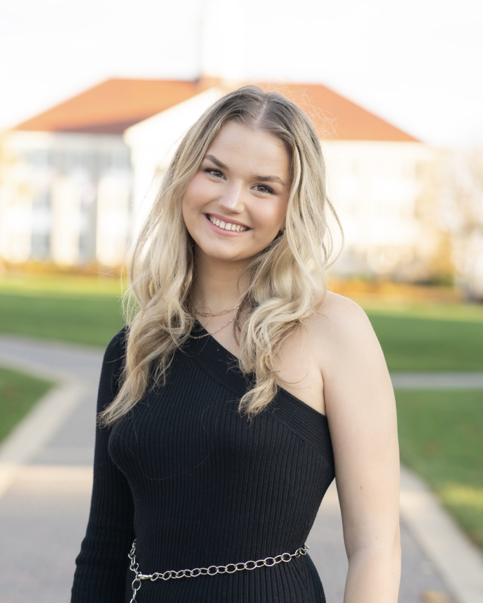

Laura Bessellieu
Contact:
2458 Silverbell Drive
Harrisonburg, Va 22801
804-317-2955
bessellp@dukes.jmu.edu

Education
Advanced Diploma
- Mechanicsville High School (Formerly Lee-Davis High School)
- 3.9 GPA
Bachelors of Arts
Experience
Public Relations Chair
Into Hymn A Cappella
December 2019-January 2021
- Create and maintain positive social image
- Craft media releases
- Increase awareness of group's events and work
- Develop social events and presence
Public Relations Director
SafeRides Student-Run Organization
March 2021-May 2022
- Create and maintain positive social image
- Develop infographics
- Increase awareness of group's events and work
- Design apparel
- Collaborate with fellow directors
Internal Director
SafeRides Student-Run Organization
March 2022-May 2022
- Organize bi-annual team building retreat
- Facilitate team bonding activities
- Lead team leader meetings
- Oversee the community of the organization
- Collaborate with fellow directors
A Cappella Director
JMU A Cappella
August 2022-May 2023
- Plan and execute auditions and callbacks
- Communicate with potential new members
- Increase awareness of group's events and work
- Oversee the moral of the community
- Collaborate with individual a cappella groups
Skills & Specialities
Musical Skills
- Classically trained vocalist (Mezzo-Soprano)
- Proficient in music theory and analysis
- Proficient in piano
Applications
- Canva
- Adobe Photoshop
- Adobe Illustrator
- iMovie